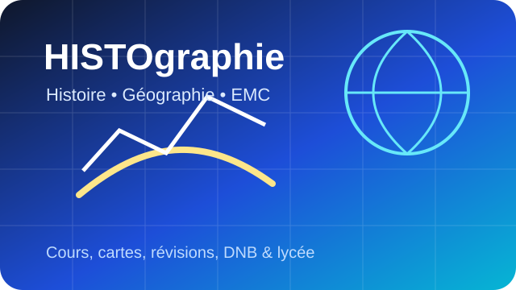
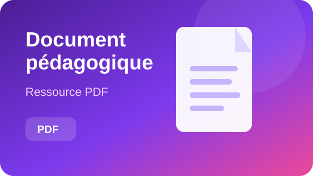
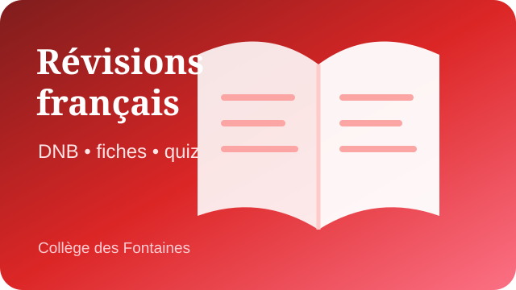
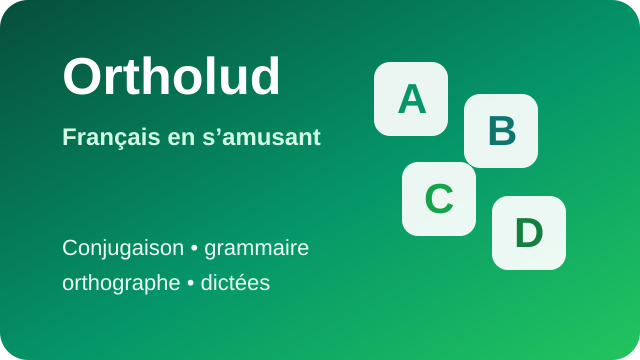

D'autres sites pédagogiques
Des ressources complémentaires pour l'histoire-géographie, le français et les révisions.

HISTOgraphie
Cours, cartes, fiches, QCM et ressources d'histoire-géographie et EMC du collège au lycée.
Ouvrir le site ↗
Document pédagogique
Une ressource PDF issue de la sélection pédagogique.
Ouvrir le document ↗
DNB : révisions français
Fiches de révision, mini-quiz, méthodes et sujets pour préparer l'épreuve de français du brevet.
Réviser ↗
Ortholud
Exercices et jeux de conjugaison, grammaire, orthographe, dictée, lecture et vocabulaire.
S'entraîner ↗Un Cours de 5 Minutes
Des vidéos pédagogiques courtes pour revoir rapidement une notion ou découvrir un thème.
Voir les vidéos ↗